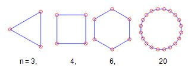
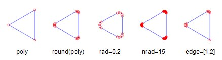
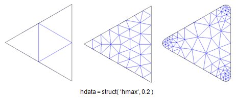
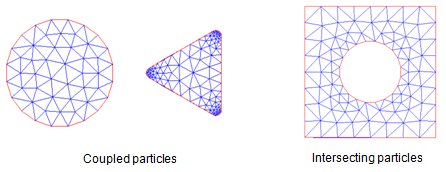

The polygon class
Metallic nanoparticles are often fabricated by means of electron beam lithography. These particles can have a complicated shape in a 2D plane while the shape in the third direction comes from some kind of extrusion. To deal with such particles we have introduced the polygon class that allows for a flexible design of polygons in 2D together with a number of functions to extrude the polygon into the z-direction. The polygon class uses the Mesh2D toolbox avaialble at www.mathworks.com. To access the functions of the Mesh2D toolobox one must add the Mesh2D directory name to the Matlab paths.
Contents
Initialization
% initialization with position list POSLST = [ x1, y1; x2, y2; ... ] poly = polygon( poslst ); poly = polygon( poslst, PropertyName, PropertyValue ); % polygon with N edges poly = polygon( n ); poly = polygon( n, PropertyName, PropertyValue );

In the polygon initialization one can additionally provide the following property names and values
- 'size' scale size of polygon,
- 'dir' direction of polygon to determine the direction of the outer surface normals (see below),
- 'sym' symmetry keyword (see section on symmetry).
Methods
There exist several methods that are useful in modifying polygons
% shift polygon by vector [ x, y ] poly = shift( poly, [ x, y ] ); % scale polygon by scalar or two values poly = scale( poly, val ); % rotate polygon by angle (degrees) poly = rot( poly, angle ); % flip polygon along given axis poly = flip( poly, ax ); % shift boundary of polygon poly = shiftbnd( poly, d ); % distance of positions POS from polygon d = dist( poly, pos );
An additional useful command to round the edges of a polygon is provided by
poly = round( poly ); % round edges of polygon poly = round( poly, 'rad', 0.2 ); % provide rounding radius poly = round( poly, 'nrad', 10 ); % provide number of points poly = round( poly, 'edge', [ 1, 2 ] ); % round only edges 1 and 2

The polygons can be plotted through
plot( poly, LineSpec ); % plot polygon with line specification plot( poly, 'nvec', 1 ); % plot normal vectors of polygon plot( poly, 'nvec', 1, 'scale', 1 ); % scale normal vectors
Triangulation of polygon areas
Once the polygon is constructed, one can call polymesh2d to perform a triangulation of the interior of the polygon using the Mesh2D toolbox.
[ verts, faces ] = polymesh2d( poly ); [ verts, faces ] = polymesh2d( poly, 'hdata', struct( 'hmax', 0.2 ) ); [ verts, faces ] = polymesh2d( poly, 'options', struct( 'disp', 1 ) );

One can pass the arguments hdata and options to the Mesh2D toolbox. Details about these arguments can be found in the help and demo files of the toolbox. The most useful setting for hdata is hmax which determines the maximum size of the discretized faces. One can set the disp flag in the options structure to force an output on the screen.
To access the full richness of the Mesh2D toolbox we can build arrays of polygons [poly1,poly2,...]. With these arrays it is possible to build complex 2D structures, as shown in the following examples
% coupled particles poly = [ polygon( 20 ), shift( round( polygon( 3 ) ), [ 2.5, 0 ] ) ]; % perform triangulation with Mesh2D [ verts, faces ] = polymesh2d( poly ); % plot polygons and triangulation triplot( faces, verts( :, 1 ), verts( :, 2 ) ); hold on; plot( poly, 'r-' ); % intersecting particles poly = [ polygon( 20, 'dir', - 1 ), scale( polygon( 4 ), 3 ) ];

With two intersecting polygons one can generate particles with holes. In the call to polygon we have set the keyword 'dir' in order to indicate that this is an inner surface. Although the keyword has no influence on the Mesh2D discretization, it has important consequences when extruding particles from the 2D polygons, as discussed in the polygon3 section.
Copyright 2017 Ulrich Hohenester